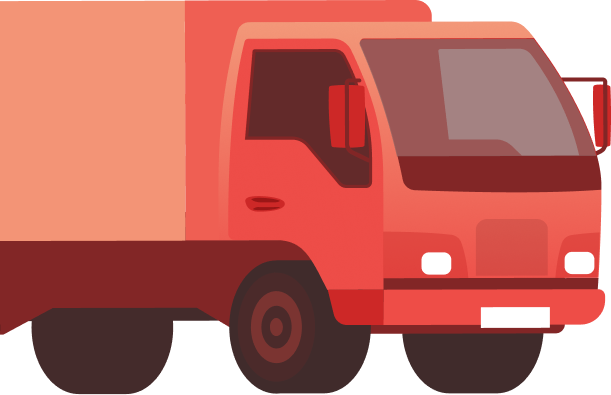
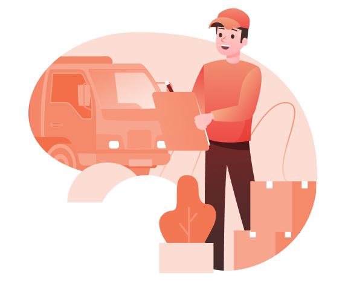

Yes, you will need to have the land owner sign the permit application as the Permittee, and you sign the permit as the Applicant or Agent for the Permittee.

About us
The occupational traffic permit is one of the most important things in the company when carrying out freight transport. In fact, it is a prerequisite for doing business traffic at all.
How do you do when you need to obtain a commercial traffic permit for freight transport to your business?

How to apply
When applying for a traffic permit, there are certain requirements that you must meet that are included in the examination: requirements for professional knowledge, solid establishment, good reputation and financial resources. Important to remember is to confirm your application for a traffic permit by the company’s company signer or CEO.
About us
Out Awesome Clients
-
-
From most barricade or traffic control companies located in the phone book. They employ certified Traffic Control Supervisors (TCS) who can generate and certify the traffic control plan.
-
An A-Line, or access restriction deed is a property right that has been obtained by CDOT for the sole purpose of prohibiting direct